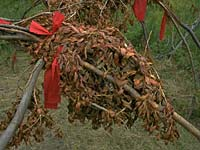
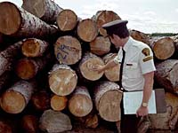

What do forests mean to you?
There are as many ways to answer this question as there are people in Saskatchewan. To some, the forest is a place to enjoy nature: camping, hiking, bird watching, hunting or fishing. To others, forests are vitally important to our economy and the mainstay of many Saskatchewan communities. Everyone can agree, however, on the need to protect and conserve this complex ecosystem so that it can continue to thrive and meet today's needs, without compromising the needs of tomorrow. |

Did you know that about 54 percent of this province is covered by forests? The complexity and diversity of the forest community and its tremendous potential are steadily becoming more apparent. Today, Saskatchewan forests are viewed as a complex web of ecosystems, a landscape that society is learning to use wisely, in a way that sustains its health and productivity. |
Only about seven million of Saskatchewan's 35 million hectares of forest lands are accessible enough to be of commercial timber interest. Many communities such as Prince Albert, Hudson Bay, Meadow Lake and Glaslyn depend on the timber industry as a major source of jobs and income. |

Forests are also home to a variety of plants and animals, and provide hunters, anglers, naturalists and fresh air enthusiasts with many hours of recreation. Other factors such as soil characteristics, wildlife, fish habitat, watersheds, high-use recreation areas and local concerns are considered and integrated into a forest resource management plan. The net result is an enhanced forest environment that is better for all forest users. |
 The emergence of the special forest products industry reflects the diverse nature of the forest. Special forest products include ornamental and floral items, herbs, essential oils and craft materials (mosses, lichens and branches). As well, some plants have unique spiritual properties for aboriginal people. |
 Nowhere is the interconnectedness of living things more apparent than in the forest. Through the adoption of an integrated forest resources management plan, we are developing the responsible management and long-term planning needed to secure our forest's future. |
Forests play an important role in global health Through photosynthesis trees absorb carbon dioxide, a greenhouse gas, and convert it to carbohydrates, of which carbon is an essential ingredient. Trees store much of the carbon they absorb, but both decomposition and forest fires release carbon back into the atmosphere. As forest products, harvested trees continue to retain carbon. As a result, forest management practices may help alleviate the greenhouse effect by increasing net amounts of stored carbon. |
With over 10 percent of the world's forests, Canada's trees are important in sustaining a healthy global atmosphere. Canadian forests absorb 135 million tonnes of carbon per year, while 58 million tonnes of carbon return to the atmosphere through fire, decomposition and other processes. That translates to a net gain of 77 million tonnes of carbon stored in our forests. Saskatchewan's forests alone store 4.5 million tonnes of carbon in this sink (based on Saskatchewan comprising 30 percent of Canada's Boreal West and 3 percent of Canada's Subarctic Ecoclimatic zones). |